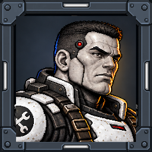
Wren / Foundry
Heavy suppression specialist. Twin autocannons and the Bastion electromagnetic barrier.
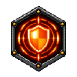
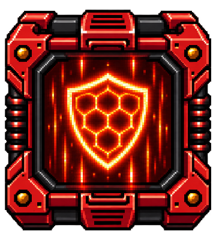
A new wind pilot, three rebel tank specialists, and allies for the infiltration missions.
Four-direction crouch-walking and prone fire for all four shared bodies, Phoenix and Hotwire; west-facing runs; scout and heavy robot patrol, fire and destruction sequences. The Machinists now have matching portrait frames, hex badges and vented ability boxes.
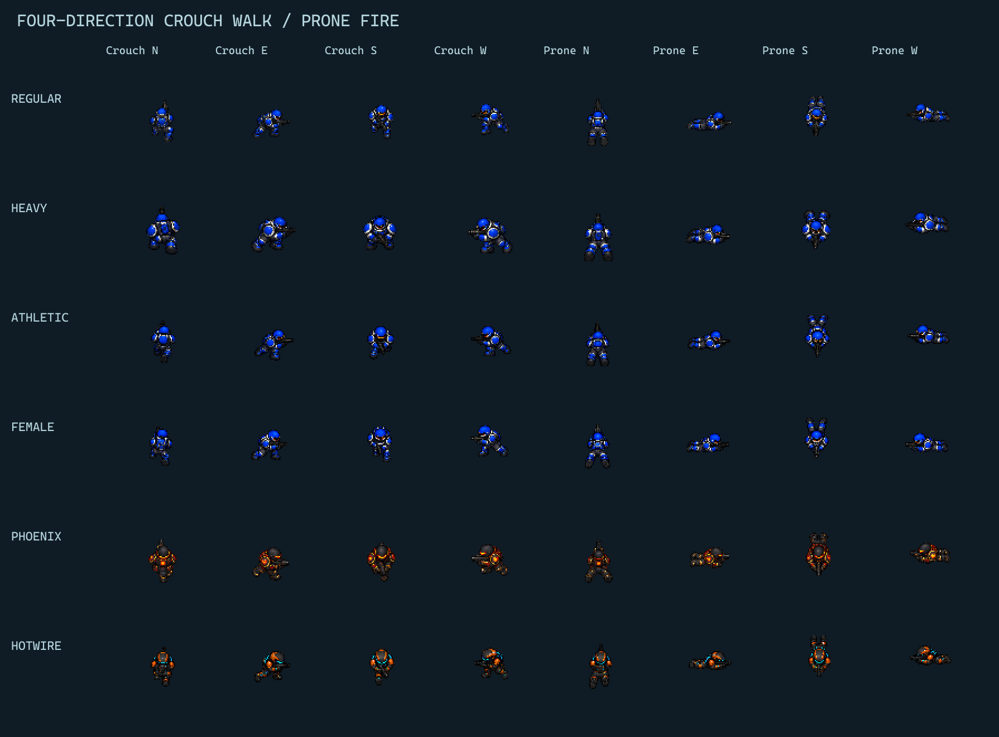
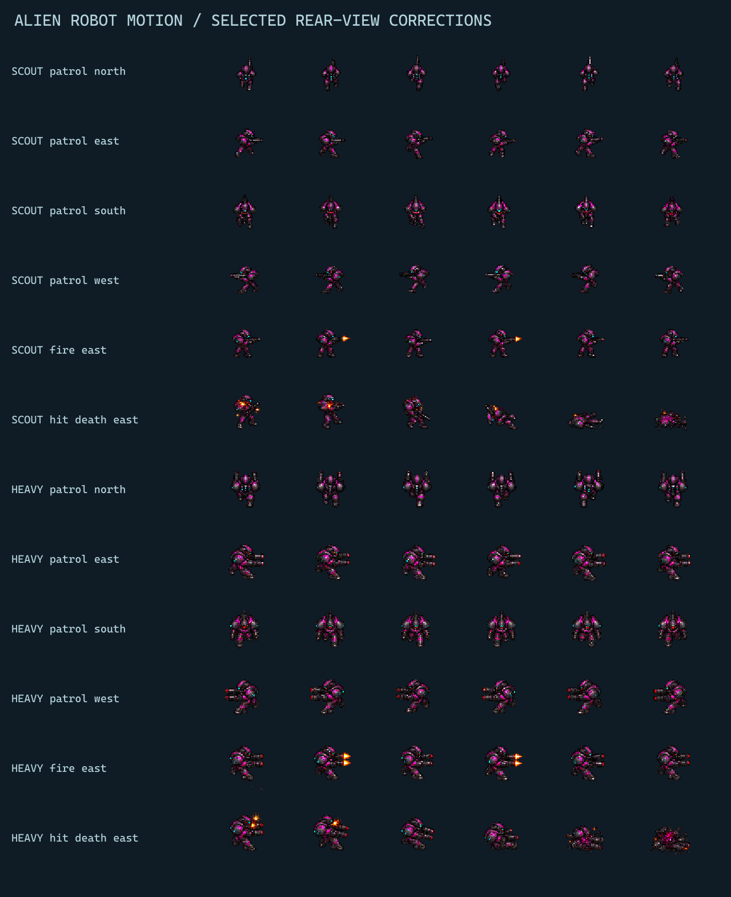
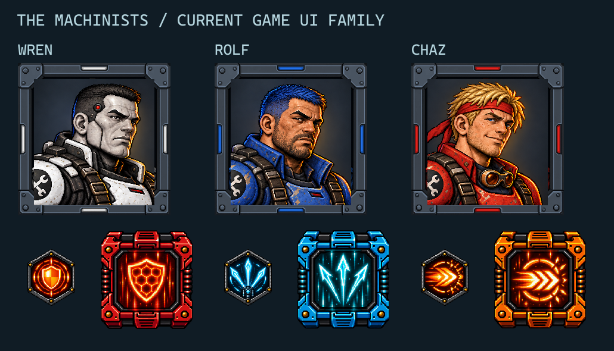
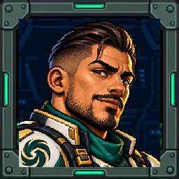
An eccentric, sophisticated Hispanic Italian pilot in his mid-30s. Pearl-white armor, sea-green accents, and a wind-turbine interceptor named Sirocco.
Windstorm sends miniature tornados forward in volleys. His approved identity is retained, now using the current game portrait frame, hex badge and vented pickup-box family.
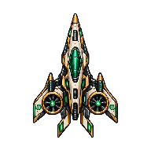
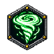
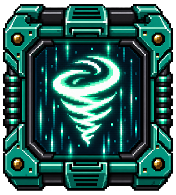
Compared with the current game assets: exact authored 256×256 portrait frame, 112×112 hex special badge and a 360×400 vented pickup box.
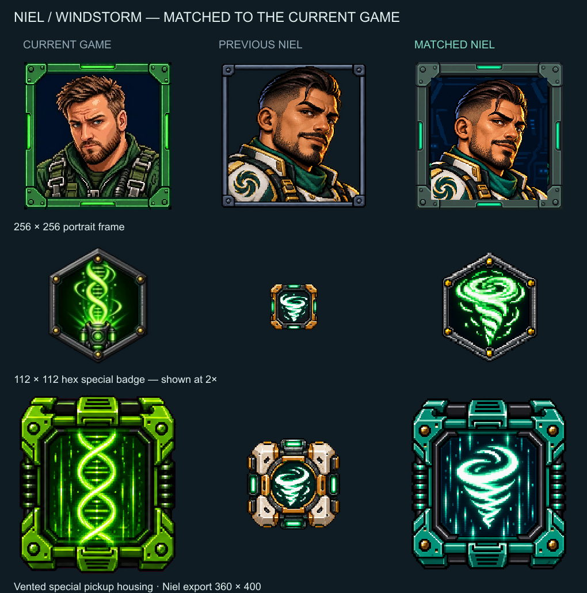
Wren wears black and white armor. Rolf has blue hair and a blue outfit. Chaz retains blond hair, now with a red forehead bandana and red outfit. Their grounded faces and current game portrait frames are preserved.

Heavy suppression specialist. Twin autocannons and the Bastion electromagnetic barrier.


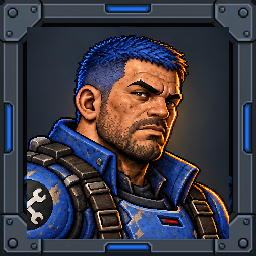
Precision assault specialist. Rail cannon and the three-way Vector Splitter.
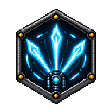
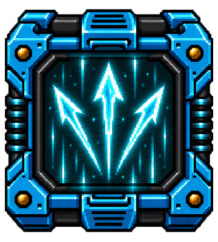
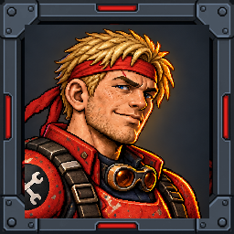
Fast breach specialist. Cannon, rocket pods, and Redline Breach boost.
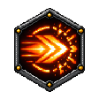
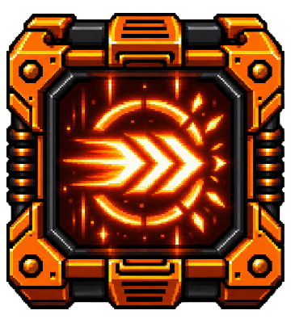
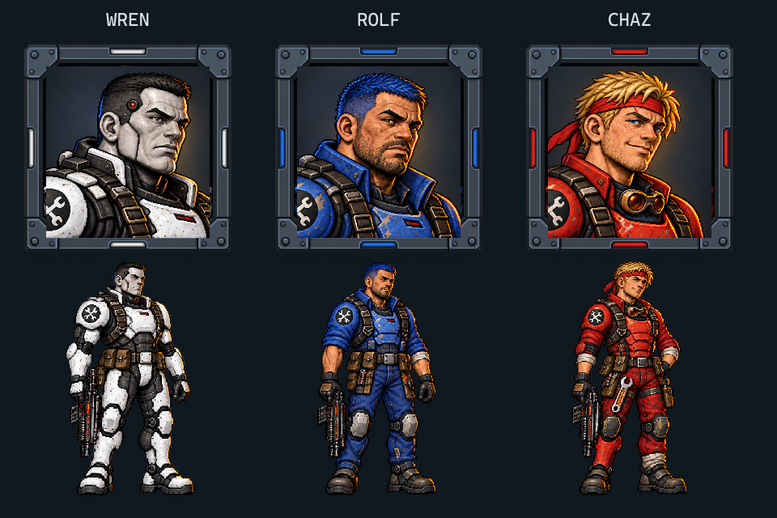
The view composes separate tracks, bare hull, rear equipment, and turret. Rotate the turret or toggle modules to inspect the assembly.
Art preview only. Recoil is a temporary turret offset; six-phase track motion is available above. Vehicle physics, collision, and abilities are described in the notes.
Inspect the tornado loop, volley formation, charge and impact phases, then each Machinist’s projectile and special effects.
Wall taps, door operation, cover lean, crate peeking, prone crawl, firing, healing, and signals. Phoenix and Hotwire wear their own armor and remain helmeted.
Three- to six-frame motion candidates. Grenades, rolls, hit/stun, death, revive, support healing, and north/south firing are included for both allies. Four-direction crouch/prone-fire, west runs and robot patrol/combat are now available. Earlier movement and combat actions are linked for shared bodies. Final animation roots, grip/hand sockets, directions, and paint masks need cleanup before gameplay integration.
On-foot HUD, Miami stage, weapons and enemies · Coastline campaign mapWind volleys, modular vehicle transforms, ally commands, cover anchors, quiet door interactions, sound investigation, and healing rules are recorded for implementation. The established one-hit player mode is preserved in those notes; medkit art also supports allies and future mode choices.